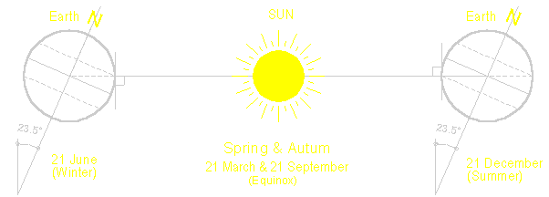
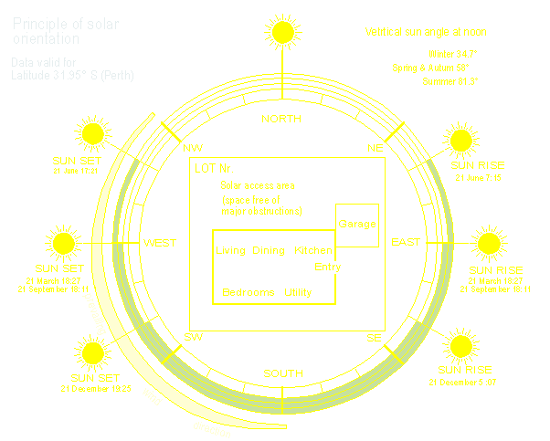

Apply principles of energy efficient design to buildings
Earth - Sun relationshipThe diagram below shows the relationship between the Earth and the sun. This relationship influences the season of the year. Watch the link )youtube video to see the orbit of the earth around the sun. To utilise the sun's energy you must be aware of the sun's movement for the particular latitude. The earth moves around the sun in a slightly elliptical orbit. A revolution around the sun takes 365 days and 5.8128 hours. The orbit results from the gravitational pull of the sun.

Figure 1 When the southern hemisphere is tilted towards the sun,
we have summer and when tilted away from the sun, we have winter. As can
be seen in Figure at noon the sun appears higher in the summer sky then
in the winter sky. [top]
Location specific requirementsChoosing a site is by far the most important aspect of building a new home. In order to create a passive solar house, there should if at all possible be access to north sunlight, with enough room away from neighbours to allow for sunlight to penetrate the north-facing rooms in winter when the sun is at its lowest. For lifestyles that focus on outdoor entertaining, gardening or recreation, a north facing back yard is the most preferred option.There are ways to overcome a lack of north aspect and still get some solar gain including clerestory windows, skylights, internal terraces and suntraps, balconies, roof structures… 
Figure 2 A site location will affects comfort and energy bills. Orientation of the house within 30° of due south is a basic but fundamental principle of passive solar design to maximise
If the site is sheltered from the wind heat loss from the building will be reduced. Sites at higher level will be colder than sites at sea level. Site location is important if considering making use of solar gains. [top]
Passive Solar DesignThe principal objective of Passive Solar Design (PSD) is to provide a building with a comfortable and healthy indoor environment at low energy and environmental cost. It relies on the careful application of the following principles during the design and the construction of the building:
High thermal mass construction in regions with significant diurnal ranges.
Passive solar coolingA primary strategy for cooling buildings without mechanical assistance in hot climates is to employ natural ventilation. It is the least expensive means of cooling and appropriate for all Australian climates. In the Perth area, prevailing summer breezes are from the southwest.Passive solar heatingPrimary elements of passive solar heating are:
More information on Passive design for students interested in this topic [top]
Natural Ventilation (Air movement)It is left up to natural forces to direct the air through the building. The building form and construction determines the relative strength of these natural forces. This basically comes down to the size and location of air inlets and outlets as well as any ability to capture or funnel prevailing breezes. Understanding the wind patterns of the region helps to design a home that takes advantage of the refreshing breezes. This will affect the choices about window size and placement, and roof shape. The design of natural ventilation systems requires identification of the prevailing wind direction, the strategic orientations and positions of openings on the building envelope.Guidelines for natural ventilation.
[top]
Assess building designThe thermal behaviour of a building is basically a function of its form (architecture), its construction (materials and workmanship), local macro and micro-climate conditions, and by its use. However, an objective of the BCA is to reduce greenhouse gas emissions by efficiently using energy and to encourage superior design and construction methods by eliminating "worst practice".The energy efficiency measures for houses (Class 1 & 10) were established in the BCA in 2003 (Volume 2), and for multi residential buildings (Class 2-4) in May 2004 (Volume 1). The most common method to assess the energy efficiency of buildings is the use of house energy rating software. Please click here for the most common rating software [top] | ||||